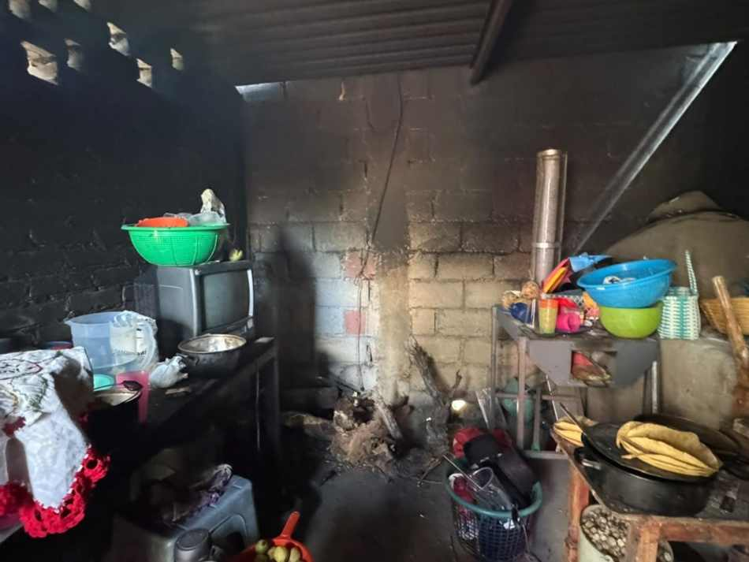
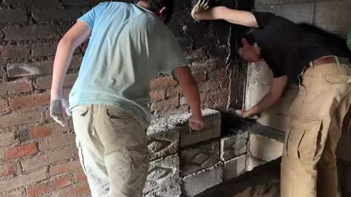

Menos humo en interiores
Promovemos estufas con salida de humo al exterior para reducir la exposición durante la preparación de alimentos.
Trabajamos para que más familias puedan cocinar con menos humo dentro de sus hogares, mediante estufas ecológicas y el poder de hacer comunidad.
Creemos que la forma de cocinar no debería comprometer la calidad del aire dentro de un hogar. Por eso buscamos alternativas más limpias y accesibles, trabajando junto a las comunidades.

Promovemos estufas con salida de humo al exterior para reducir la exposición durante la preparación de alimentos.
Impulsamos tecnologías de cocción más eficientes que buscan aprovechar mejor el combustible disponible.
Escuchamos sus necesidades y participamos en procesos de construcción, aprendizaje y acompañamiento.
Una palabra de origen otomí que inspira nuestra misión: que el aire dentro de cada hogar sea sinónimo de bienestar, tranquilidad y futuro.
Comenzamos con la construcción de una estufa ecológica tipo Patsari, pensada para canalizar el humo fuera del espacio donde se cocina y aprovechar de forma más eficiente la leña.
Pero Ndähi no se trata solamente de construir una estufa. Se trata de colaborar, aprender de las familias y crear un proyecto que pueda crecer para llegar a más hogares.
Mira cómo está avanzandoConocer a las familias, sus costumbres y lo que realmente necesitan.
Sumar conocimiento, materiales y manos para hacer realidad cada estufa.
Aprender de la experiencia y mejorar para las siguientes familias.
Ndähi nace como una iniciativa estudiantil y avanza paso a paso. Compartimos el proceso con transparencia, sin dar por concluidas etapas que todavía están en desarrollo.
Contacto y diálogo para conocer el contexto de las familias.
Definición del modelo de estufa y organización de materiales y apoyos.
Trabajo colaborativo para convertir la planeación en una instalación real.
Recopilar aprendizajes y explorar futuras implementaciones.
Documentación original del proyecto escolar Raíces Sustentables. El modelo digital sirve para visualizar la propuesta; antes de construir una estufa funcional, las medidas, la herrería y la salida de gases deben validarse con el especialista.
 Vista previa del modelo 3D
Vista previa del modelo 3DGira, acerca y examina el diseño conceptual del equipo. El modelo GLB no es una simulación de combustión ni una certificación de seguridad.

Planta, alzados y cortes del diseño escolar (escala 1:25; medidas en centímetros). Base de 125 × 90 cm y altura de cocción proyectada de 90 cm.
Consultar plano original ↗Guía oficial de Ndähi para las familias: primer encendido, cocción segura, limpieza, mantenimiento y bibliografía.
Este manual aún está por terminarse. Recoge nuestra experiencia con la base y recomendaciones para aprovechar materiales locales y reutilizables. La construcción del cuerpo todavía está pendiente de documentarse y validarse. No sustituye una revisión técnica.
Compartimos estos recursos para que otras familias y comunidades conozcan y adapten la propuesta con acompañamiento técnico, de acuerdo con las condiciones de cada vivienda.
Compartimos momentos reales de la preparación de materiales y el trabajo conjunto, además del contexto de la cocina que motivó la iniciativa.


Documentamos cada paso con respeto hacia las familias y su comunidad.
Queremos que Ndähi crezca hasta llegar a más hogares. La colaboración de personas, negocios y comunidades puede ayudar a que esa visión tome forma.
Descubre cómo sumarteRecursos para facilitar la construcción de futuras estufas.
Experiencia técnica, acompañamiento o manos para colaborar.
Ayudar a que el mensaje llegue a más personas y comunidades.
Estamos construyendo nuestros canales oficiales. Publicaremos próximamente una forma directa de contacto y colaboración.